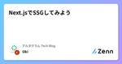

アルダグラム Tech Blogのフィード
https://zenn.dev/p/aldagram_tech
株式会社アルダグラムのTech Blogです。 世界中のノンデスクワーク業界における現場の生産性アップを実現する現場DXサービス「KANNA」を開発しています。 採用情報はこちら https://herp.careers/v1/aldagram0508/
フィード
Kotlin Fest 2024 イベントレポート - Kotlinを愛でてきた！
アルダグラム Tech Blogのフィード
こんにちは！アルダグラムでエンジニアとEMとPdMをしている @sukechannnn です！Kotlin Fest 2024 に行ってきたので、見てきたセッションのメモをイベントレポートとして公開します！どのセッションもKotlinへの愛を感じ、勉強になることばかりで最高のカンファレンスでした！ 先にまとめKotlin Multiplatform の勢いがすごいCompose Multiplatform (iOS) も Production Ready に着実に近づいているサーバーサイド Kotlin はある程度成熟していて、それでいてモダンな開発ができるここ...
7日前

Next.jsでSSGしてみよう 1
1
アルダグラム Tech Blogのフィード
概要みなさん、こんにちは！アルダグラムでエンジニアをしている大木です。今回は Next.js でSSG(Static Site Generation) を試した記録を残そうかなと思います。弊社ではLPやコーポレートサイトで Gatsby.js を利用しています。Gatsby.js の便利な側面もある一方で、(主観ですが)直近はアップデートが鈍化している傾向にあり、技術移行も踏まえて検証をしないといけないなと感じていたところでした。そこで今回は Next.js でのSSGを試していこうかなと思います。余談ですが、SSGでいうと Astro なんかも聞くことがありますね。今後こ...
13日前

XState で複雑な状態遷移をシンプルに管理する
アルダグラム Tech Blogのフィード
こんにちは！KANNA の開発のお手伝いをしております、フリーランスエンジニアの len_prog です。今回は、XState を用いてステートマシーンを作り、アプリケーションの複雑な状態遷移をシンプルに実装する方法についてご紹介します。 背景アルダグラムでは、デジタル帳票アプリケーション「KANNA レポート」を提供しています。KANNA レポートは、Excel や Google スプレッドシートのようなユーザーインターフェースを備えた Next.js 製の Web アプリケーションとなっており、複雑な状態遷移を多く含んでいます。このような複雑な状態遷移を管理するためには...
20日前
Kover を使って PR にシンプルなテストカバレッジレポートをつけたい
アルダグラム Tech Blogのフィード
こんにちは！アルダグラムでエンジニアをしている内倉です🦐ユニットテストのカバレッジを出したいけれど「ちょっと見たいだけで Codecov とか使うほどではないんだよな」というようなこと、たまにありませんか？今まで Rails のプロジェクトでは、テストカバレッジを GitHub の PR にコメントとして追加してみたことがあるのですが、Android + Kotlin ではやったことなかったので、少し調べてみました。Android でカバレッジ取るなら、JaCoCo 一択なのかな？と思っていましたが、Kotlin だったら Kover というのが良さそうだったので導入してみたところ...
1ヶ月前
MySQL 5.7 から 8.0 にアップデートして開発者として得たもの
アルダグラム Tech Blogのフィード
こんにちは！アルダグラムでエンジニアをしている森下霞です。先日、弊社では MySQL5.7のサポート期限が迫ってきたのでMySQL8に移行しました。そこで、開発者として手に入れて嬉しかったものについて、この記事で説明できればと思います。 CTE クエリのリードビリティーと多機能性MySQL 8.0 で導入された CTE (Common Table Expressions) を使用するクエリを具体的な例で見るため、まずは3つのテーブルを用意します。anime (id, title, genre)scores (id, anime_id, score)episodes (id...
1ヶ月前
ランディングページ（LP）にユニットテストを導入した話
アルダグラム Tech Blogのフィード
こんにちは！アルダグラムでエンジニアをしている柴田です。弊社では、ランディングページ（以下、LP）にGatsby.js を利用しています。今回は、LP に対してユニットテストを導入した話をしたいと思います。 背景私が所属するチームでは、普段の開発に加え、LPの開発と運用も行っています。LPはプロダクト・組織の広報において非常に重要な役割を果たしています。例えば、新機能や導入事例のプレスリリース、企業ブランディングの情報発信の場として機能しています。 しかし、静的ページがある故に、十分なテストが整備されていませんでした。さらにサービスの拡大に伴い、LPへの改修頻度が高まり、手動...
1ヶ月前
MagicPodをBitriseで使い始めるときにハマった設定を書き残しておく
アルダグラム Tech Blogのフィード
アルダグラムでモバイルアプリの開発を担当している長尾です。今回は弊社で利用させていただいているMagicPodを使い始めるにあたり、なかなか気づけなかった設定ミスがあったので、それを書き残しておこうと思います。 bitrise→MagicPodは難しくないMagicPodは、Bitriseからのアップロードに対応しています。つまり、公式に対応されているWorkflowのステップが存在しており、Bitriseを使っているユーザーであれば、簡単にMagicPodへ、ipaをアップロードができるようになっています。設定項目も、Bitriseを使用してCIを組んでいるような方であれ...
2ヶ月前
Gatsby製のランディングページ（LP）のパフォーマンス改善
アルダグラム Tech Blogのフィード
みなさんこんにちは！アルダグラムでエンジニアをしている今町です。弊社では、サービスサイトの LP ページ・コーポレートサイトのような静的サイトで Gatsby を利用しています（Gatsby とは React ベースの SSG フレームワークです）私がアルダグラムに入社して初めて行った仕事が、Gatsby 製の LP ページのパフォーマンス改善でした。入社から 3 ヶ月が経過し、当時を思い出しながらどうやってパフォーマンス改善を進めていったか共有したいと思います。また、Gatsby 製のサイトを運用している方にとって、少しでも参考になったら嬉しいです 🥰 現状を知るまずは、Ga...
2ヶ月前
React Native で SwiftUI を使ってみよう
アルダグラム Tech Blogのフィード
こんにちは！アルダグラムでエンジニアをしている渡辺です今回は React Native で SwiftUI を使って開発を行う方法を書いていこうと思いますアルダグラムではアプリ開発を React Native を使って開発を行っていますが、新機能開発や既存機能を SwiftUI を使ってリプレイスしたりしています。iOS エンジニアではなかった僕が Native UI Components を開発するのに1から UIKit を学習するよりも SwiftUI を学習するほうがコストが少なく、そしてより早く開発が行えると思ったことがきっかけで React Native で SwiftU...
2ヶ月前
Amazon Aurora MySQL5.7のサポート期限が迫ってきたのでMySQL8に移行した話
アルダグラム Tech Blogのフィード
こんにちは、アルダグラムのSREエンジニアの okenak です弊社のサービスのDBにAmazon Auroraを利用していますが、MySQL5.7の標準サポートが2024年10月31日までであるため、MySQL8の移行を実施しました。（サポート期限について）今回は移行に伴い調査したことや対応手順、実際に起きた問題について紹介したいと思います。 Aurora MySQL8のアップグレード内容の調査MySQL5.7からMySQL8の移行だったので、公式ガイドを見て機能差分の調査を行いましたMySQL :: MySQL 8.0 リファレンスマニュアル :: 2.11 MySQL ...
2ヶ月前
アルダグラムの「一人目QA」になってからの半年間の振り返り
アルダグラム Tech Blogのフィード
アルダグラムの「一人目QA」になってからの半年間の振り返りこんにちは！アルダグラムでQAエンジニアをしているshige_sです今回は入社から半年が経ったので、これまでやってきたことを振り返っていきたいと思います。日々の業務で振り返る機会もなかったので、今回記事を書いてもう半年経ったんだと✨早く感じるということは楽しかったんだとポジティブに捉えていきたいと思います！まず、前提としてですが、QAグループは6名体制となっています。QAグループ長：他の開発グループ長と兼務している開発エンジニアQAリーダー：私（唯一の社内QAエンジニア）KANNAプロジェクトやKANNAレポ...
3ヶ月前
swift-collectionsで学ぶデータ構造
アルダグラム Tech Blogのフィード
こんにちは！アルダグラムのモバイルエンジニアですswift-collectionsは、Swiftプログラミング言語を使って一般的に使用されるデータ構造の実装を提供するApple製のオープンソースパッケージです。これは、場合によって標準ライブラリよりもっと効率的に使いやすいものです。今回はswift-collectionsにあるデータ構造に対して簡単に紹介します。 BitSetとBitArrayBitSet は、特定のビットがセットされているかどうかを効率的にチェックすることができます。例えば、特定の要素が存在するかどうかを追跡するのに使えます。var bitSet = BitS...
3ヶ月前
DOM要素の伸縮完了後にCallbackを実施する
アルダグラム Tech Blogのフィード
アルダグラムでエンジニアをしている松田です。UI操作により、動的に変化する要素があるとします。要素の伸縮動作の完了を見届けた後に、何らかの処理を行いたい…そのようなユースケースで、本稿の内容が参考になれば幸いです。 要素を参照する方法 🎯まず、要素を参照する方法を考えてみます。 useRef + useEffect ? 🤔素朴に実装しようとすると、以下のようになるかもしれません。useRefを用いて、ref objectを用意するref objectを対象要素のref属性に指定するuseEffectでマウント時に、ref objectを参照するimport...
3ヶ月前
Reactで使えそうなグラフ描画ツールってなぁになぁに？
アルダグラム Tech Blogのフィード
こんにちは！アルダグラムでエンジニアをしている大木です。昨今若者の間では「なぁぜなぁぜ？」というのが流行っているみたいですね。積極的に使っていこうと思います。さて今回は、Reactで使えそうなグラフ描画のライブラリはどぉれどぉれ？なのか調査調査？していこうかと思います。グラフ描画と聞いて筆者がすぐに思いつくのは、やはり「Chart.js」でしょうか。そちらも踏まえて、どういったライブラリがあるのかか調査していこうかと思います。 ~はじめに~ 執筆の背景実際にプロダクトで利用するつもりはなく「どんなものがあるのかな」と気になったので調査してみた、というのが執筆背景です。エンター...
4ヶ月前
Kotlin + DGS で始めるスキーマファーストな GraphQL サーバー開発
アルダグラム Tech Blogのフィード
こんにちは！アルダグラムでエンジニア兼PdMをしている @sukechannnn です！昨年から実装を開始した「KANNAレポート」では、バックエンドのGraphQLサーバーを Kotlin + SpringBoot + DGS で開発しています。Kotlin × SpringBoot で使える GraphQL フレームワークはけっこう選択肢があり色々迷った末に DGS を選んだのですが、スキーマファーストな開発体験がとても良いです。この記事では DGS (Netflix DGS Framework) の特徴と、便利な機能をご紹介します！ Netflix DGS Framewo...
4ヶ月前
Realm SwiftをSwift ConcurrencyとActorを使って安全に使いたい
アルダグラム Tech Blogのフィード
こんにちは！アルダグラムでエンジニアをしている長尾です久々のtry! Swift Tokyoが2024/03/22から開催されますが、そういえば初期のtry! SwiftはRealmが後援していたような、、と思い出しました。Realmは現在MongoDBに吸収されていて、時代の流れを感じます。。(※そして名前もAtlas Device SDKとかに変わるらしい。。)とはいえ2024年現在でもRealm Swiftは利用が可能であり、弊社のiOSアプリでも使用しています。また、Swiftは、そろそろ6.0がリリースされる足音が聞こえてきており、Strict Concurrency...
4ヶ月前
認証/認可処理の実現方法の検討と運用してみての感触
アルダグラム Tech Blogのフィード
こんにちは！アルダグラムでエンジニアをしているヤスです。 始めにKANNA では世界中のノンデスクワーカーに使われる SaaS を意識してプロダクト開発を行っております。https://lp.kanna4u.com/しかし、toB 向けのサービスであることから、以下のようなご要望も一定数存在します。ビジネス要件上どうしても個社ごとに最適化を行いたい他 SaaS や自社システムと KANNA を連携したいそのような場合、契約した会社自ら、プロダクトの拡張を行っていただくために、KANNA のリソースにアクセスできる 外部連携用のAPI を開発いたしました！https:...
4ヶ月前
JetBrains IDE で react-i18next の補完をできるようにする
アルダグラム Tech Blogのフィード
こんにちは！KANNA の開発のお手伝いをしております、フリーランスエンジニアの len_prog です。私は普段の Web フロントエンド開発に、JetBrains 社が提供する WebStorm を使用しています。JetBrains の IDE はデフォルトの状態でも非常に優秀で、補完も大体の場合にはちゃんと効くのですが、多言語化対応の開発をしている際に react-i18n-next の補完が効かずに困ったことがありました。通常、プロダクトの多言語化対応では非常に多くの翻訳を追加する必要があり、補完が効かない状態で開発するのはかなりしんどいです。例えば、このキーの翻訳が無...
5ヶ月前
【Android】mozjpeg を使って JPEG 画像を軽量化する
アルダグラム Tech Blogのフィード
こんにちは！アルダグラムでエンジニアをしている渡邊です！以前画像を軽量化するための調査を行った際に、mozjpeg というライブラリがあることを知りました。 今回はこの mozjpeg を使って Android アプリで JPEG 画像を軽量化させてみたいと思います。 ちなみにこのライブラリは C 言語で書かれているため、C 言語のコードを動かせる環境であれば Android アプリ以外でも使うことは可能です。 mozjpeg とはmozjpeg は Improved JPEG encoder. と GitHub では記載されています。 このライブラリを使うことで通常よりさらに軽...
5ヶ月前
会社のテックブログ運営の話
アルダグラム Tech Blogのフィード
こんにちは。アルダグラムでエンジニアしている前山です。弊社では、2022年の2月から、Zenn の Publication 機能を利用して、テックブログを運用しています。https://zenn.dev/p/aldagram_techそして、昨年の5月から、社内でテックブログチームを発足し、運営してきました。本記事では、弊社のテックブログの目的や直近ブログチームでやってきたことを紹介できればと思います。 テックブログの目的弊社のテックブログの運営において、目的としては会社から見てと個人から見ての2つの観点があります。 会社としての目的 1. 知名度と外部認知の向上...
5ヶ月前